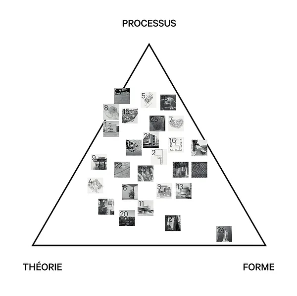
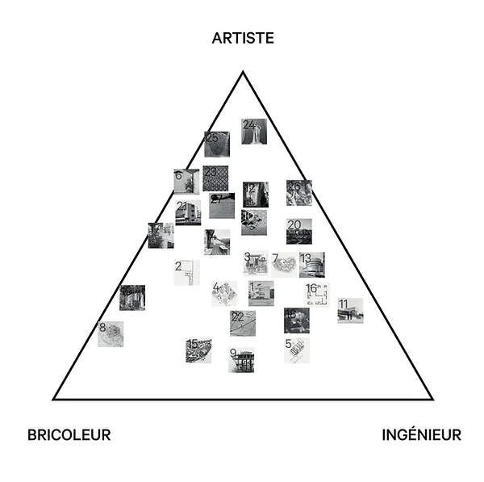
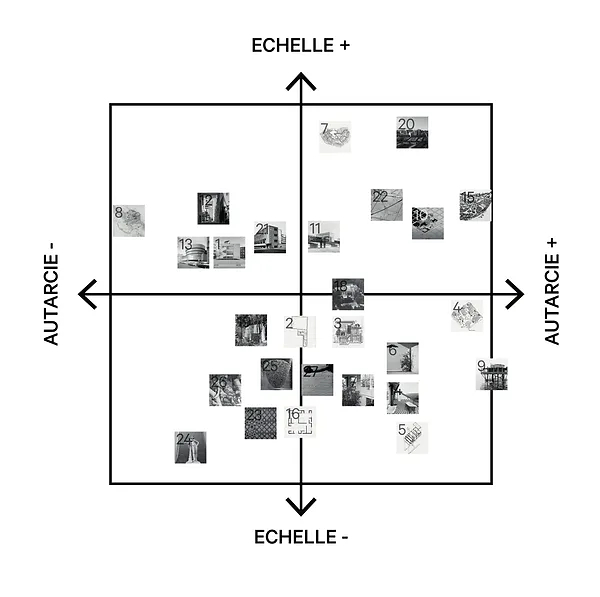
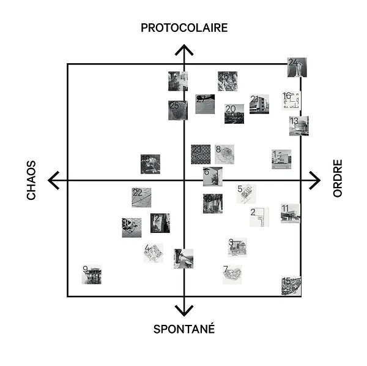
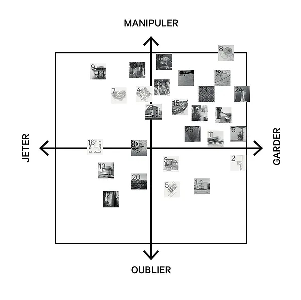

Situez vos pères
Studio MHP, ensa Nantes
Exposition au Blockhaus DY10
novembre 2022
ASAP a proposé au studio de Master de l’ENSA Nantes «Muter Habiter Penser» - encadré par Léa Mosconi, Romain Rousseau et Aleksey Sevastyanov - de participer à sa première édition.
L’exercice de ‘‘Tuez nos pères’’ est avant tout affaire de détournement. Il s’agit, ici, de retourner, essorer et recoller. Si le texte restait jusqu’à présent le médium privilégié, le workshop s’empare alors, pour sa part, d’un des outils les plus féconds vis-à-vis de cette question de détournement : le diagramme.
Le diagramme est une ‘‘machine abstraite’’. Il ne contient que du concept ou de l’idée et est donc détaché de tout contexte spécifique. Un même diagramme peut, de fait, devenir la grille de lecture de sujets très différents. Reste à juger si la collision entre l’abstraction du support et la spécificité de la situation étudiée, s’avère pertinente.
Pendant deux jours de travail relativement intensif, les étudiant.e.s du studio se sont donc aff airé.e.s à épuiser ce support. Le workshop s’est divisé en trois séquences :
1 - Il a d’abord été question de générer une base conceptuelle. Pour obtenir des grilles de lecture variées, les étudiant.e.s ont alors imaginé des structures spatiales - qui fonctionnent comme des fonds cartographiques. La forme du diagramme - triangulaire ABC, deux axes A-Abarre/B-Bbarre ou du type structure de venn - et les pôles/axes qui la dessinent ont été déterminés par chacun.e selon les thématiques propres à leurs projets. Après un travail collectif de classification et de réduction, 6 structures diagrammatiques ont émergé. Existant indépendamment de leurs auteurs de départ, ces grilles de lecture devaient maintenant être éprouvées spécifiquement.
2 - Il a alors été question pour chaque participant.e du workshop d’inscrire sa trajectoire personnelle au sein-même des diagrammes. Cette rencontre avec la base diagrammatique visait une sorte de clarification des intentions. Un vecteur dessine pour chaque étudiant.e le chemin qu’iel veut emprunter au cours du semestre.
3 - Enfin, il a été proposé aux participant.e.s du workshop de placer sur les mêmes diagrammes un corpus de références - plus ou moins architecturales - choisies individuellement - toujours en fonction du projet envisagé.
Ainsi, vous trouverez, ici, une mise en forme de ce travail de studio démontrant la puissance de l’outil diagrammatique. La juxtaposition des grilles de lecture offre en effet une meilleure compréhension de ce que nous faisons, en révélant des proximités inattendues ou des scissions immuables...





Chaque référence a été sélectionnée par un.e étudiant.e du studio de master en fonction de la piste envisagée pour son projet de semestre
Projets d’architecture
1 Mode and Design, Rotor, Bruxelles (Belgique), 2017
2 Maison Chai de la Borderie, Atelier Zola, Salles-sur-Mer, 2021
3 Tread Machiya Case Study, Atelier Bow-wow, Tokyo (Japon),2007
4 Malabar Cements Township, Charles Correa, Kerala (Inde),1982
5 Steel House, Cedric Price, Royaume-Uni, 1967
6 Exposition Grindbakken, Rotor, Ghent (Belgique), 2012
7 Université d’Urbino, Giancarlo de Carlo, Urbino (Italie), 1955-1999
8 La mémé, Atelier Lucien Kroll, Woluwé-Saint-Lambert (Belgique), 1970
9 Île de la Rose, Giorgio Rosa, Mer adriatique (Italie), 1968
10 Les 12 maisons, Le pays des maisons Longues, Luca Merlini,2010
11 Eiff el 21, Hugo Lebrunet, Bordeaux, 2018
12 Logements les hauts de formes, Christian de Portzamparc,Paris, 1979
13 Musée Guggenheim, Frank Lloyd Wright, New York (Etats-Unis), 1959
14 Manifeste pour une maison Vivante, Agence Encore, Hourré,2015
15 Ferme de permaculture, Perrine et Charles Hervé-Gruyer, Bec-Hellouin, 2004
16 Poli House, Pezo Van Ellrichschausen, Chili, 2005
17 House with plants, Junya Ishigami,Tokyo (Japon), 2012
18 Otto House + Workshop, Frei Otto, Leonberg-Warmbronn, 1968
19 Housing Prototype, Tatiana Bilbao, San Cristobal (Mexico), 2014
20 Chassé Park Masterplan, OMA, Breda (Pays-Bas), 1994-2000
Concepts
21 Enseignement du Bauhaus, Dessau (Allemagne), 1919-1932
22 Concept du Rhizome, France, Gilles Deleuze & Félix Guattari, 1980
Arts
23 Velours du Kasaï, Kasaï (République démocratique du Congo)
24 Sculpture (Reproduction) du jeune Héraclès, Ecole des Beaux-arts de Paris
25 Plastic Bags, Pascale Mathine Tayou, 2008
26 La chute des géants, Guilio Romano, Mantoue (Italie), 1532
27 Hand Catching Lead, Richard Serra, Etats-Unis, 1938
L'ensemble des articles issus de l'exposition sont disponibles ci-dessous:
| # | Titre | Auteur | |
|---|---|---|---|
| 001 | Exposition #01 Tuez vos Pères | ASAP | Tuez vos pères |
| 002 | Le charme discret de l'aire résidentielle | Hugo Forté | Tuez vos pères |
| 003 | Architecture Non Non Référentielle | Sacha Nicolas & Basile Sordet |
Tuez vos pères |
| 004 | Le paysage d'après Mendeleïev | Clarisse Protat | Tuez vos pères |
| 005 | Mes chers chez moi | Rachel Rouzaud | Tuez vos pères |
| 006 | Briser le plan | Thimoté Lacroix | Tuez vos pères |
| 007 | Vertu et fruits confus | Louis Voyer | Tuez vos pères |
| 008 | Au delà de la Bigness & l'Emptiness | Louis Fiolleau | Tuez vos pères |
| 009 | Fear and Learning from Las Vegas | Hugo Forté | Carte Blanche |
| 010 | Le temple de la physicalité | Louis Fiolleau | Carte Blanche |
| 011 | Situez vos pères | ensa Nantes Studio MHP |
Workshop |